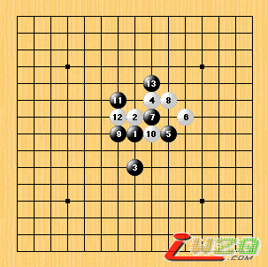
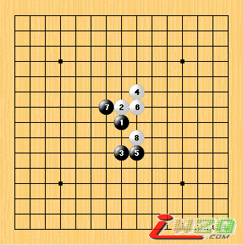

转载董伟伟老师布置的一批作业
首页
定式及研究
#1 转载董伟伟老师布置的一批作业 作者：有志青年 发表时间：2007-4-5 14:57:48
这批作业题应该是董老师布置给洪塘小学学生们完成的作业，有一定难度哟。
白先如何胜？

#2 转载董伟伟老师布置的一批作业 作者：有志青年 发表时间：2007-4-5 14:59:56
黑先胜

#3 Re:转载董伟伟老师布置的一批作业 作者：黄药师 发表时间：2007-4-5 18:36:23
好好，收藏。
等队员选拔好以后考考他们！
今天在学校三年级中发现了一个好苗子。
#4 Re:转载董伟伟老师布置的一批作业 作者：笑三笑 发表时间：2007-6-10 18:04:36
好，看后收获不少，谢谢
#5 Re:转载董伟伟老师布置的一批作业 作者：笑三笑 发表时间：2007-6-10 18:07:13
好，好
#6 Re:转载董伟伟老师布置的一批作业 作者：lfzxdh 发表时间：2007-8-5 18:16:05
第1题就不会做啊 郁闷
帮忙传下哈
#7 Re:转载董伟伟老师布置的一批作业 作者：无尽 发表时间：2007-8-6 8:52:04
难度不小哦 小学生..
小学生..
#8 Re:转载董伟伟老师布置的一批作业 作者：wuzi 发表时间：2007-8-6 17:44:34
第一题就不会，唉
#9 Re:转载董伟伟老师布置的一批作业 作者：如果的事 发表时间：2007-10-8 21:29:41
4呀，好难哦
 我太笨了
我太笨了
#10 Re:转载董伟伟老师布置的一批作业 作者：自由 发表时间：2008-2-28 4:42:06
第一题，先在2手右落子，然后根据黑棋的防点，有很多胜法！！
#11 Re:Re:转载董伟伟老师布置的一批作业 作者：风炎 发表时间：2008-5-25 10:15:17
引用：
原文由 自由 发表于 2008-2-28 4:42:06 :
第一题，先在2手右落子，然后根据黑棋的防点，有很多胜法！！
真的吗？这个应该是黑必胜吧。既然你说有白很多胜法能不能发一两种上来
#12 Re:转载董伟伟老师布置的一批作业 作者：汪洋孤舟 发表时间：2008-5-25 11:12:07
小学生，不会吧，看来我要去幼儿园了！
#13 Re:转载董伟伟老师布置的一批作业 作者：王志伟123 发表时间：2008-5-25 12:30:55
迷糊迷糊迷糊迷糊迷糊迷糊迷糊迷糊迷糊迷糊
［ 有志青年 于 2008-5-25 13:10:58 时奖励此帖[金币加 20 威望加1］
#14 Re:转载董伟伟老师布置的一批作业 作者：王志伟123 发表时间：2008-5-25 12:31:36
迷糊迷糊迷糊迷糊迷糊迷糊迷糊迷糊迷糊迷糊迷糊迷糊迷糊迷糊迷糊迷糊迷糊迷糊迷糊
#15 Re:转载董伟伟老师布置的一批作业 作者：只影游魂 发表时间：2008-7-8 21:39:13
大哥，摆脱谁告诉我，白先走如何胜的最后一题怎么解
#16 Re:转载董伟伟老师布置的一批作业 作者：亦可 发表时间：2009-7-24 12:22:47
小学生的题，费劲啊
#17 Re:Re:转载董伟伟老师布置的一批作业 作者：黄药师 发表时间：2009-8-3 23:40:19
引用：
原文由 黄药师 发表于 2007-4-5 18:36:23 :
好好，收藏。
等队员选拔好以后考考他们！
今天在学校三年级中发现了一个好苗子。
我收回两年前我说的话，这个家伙现在表现很不好！